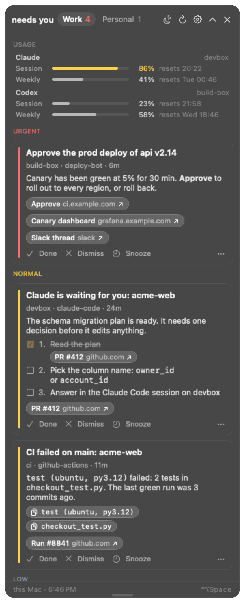
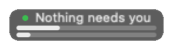
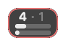
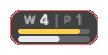
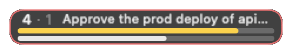
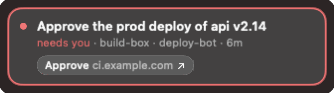
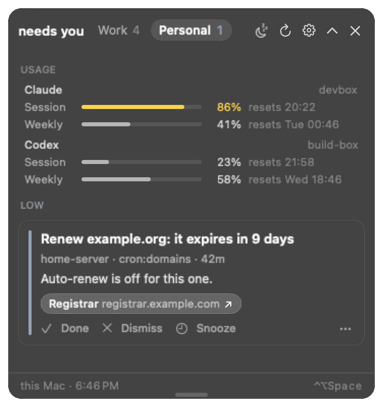
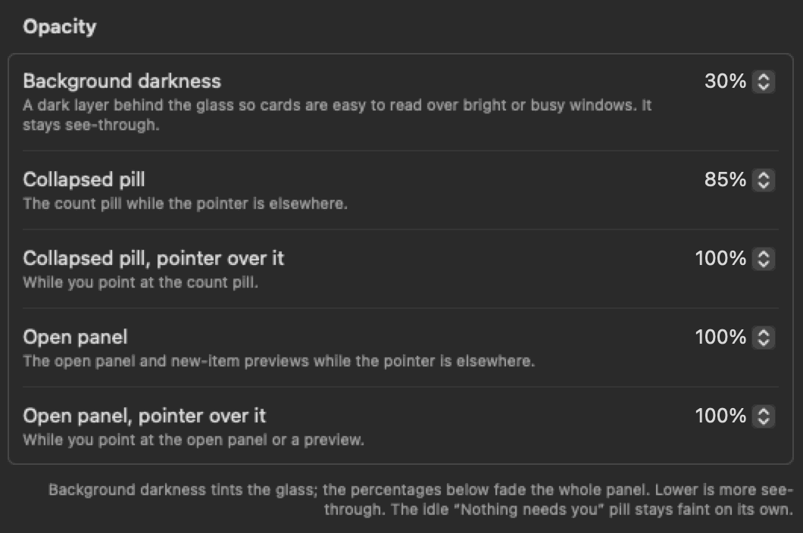
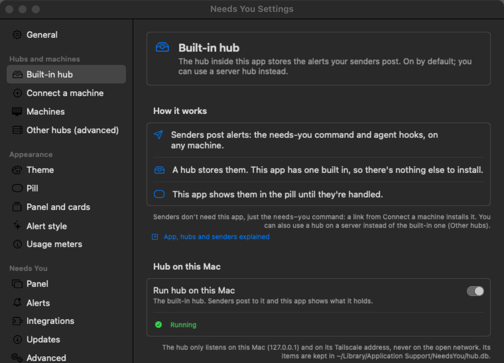
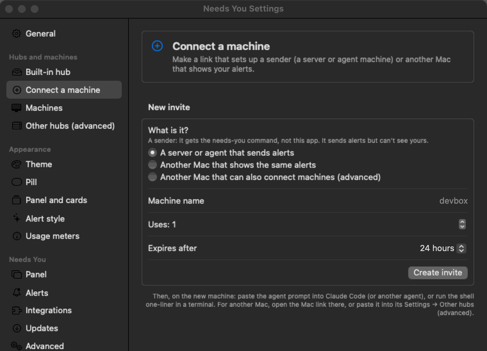

The Mac app
NeedsYou.app, the Needs You app, is the part of needs-you that shows your alerts. It's a small floating panel (no Dock icon; an optional menu bar icon) that reads them from a hub and stays out of the way until something needs you. It has a hub built in, so it works on its own; senders on your other machines post to that hub.
Build, install and signing details live with the code: mac/README.md. This page is the short version for users. New to the words app, hub, sender and owner? App, hubs and senders explains them.
Install #
- Download
NeedsYou-X.Y.Z.dmg(orNeedsYou-X.Y.Z-macos.zip) from the repository's Releases page, plusSHA256SUMSif you want to check it (shasum -a 256 -c SHA256SUMS), and check its build provenance withgh attestation verify NeedsYou-X.Y.Z.dmg --repo tayharris/needs-you(release-signing.md). Or build it per mac/README.md. - Drag
NeedsYou.appto/Applicationsand open it. It's ad-hoc signed, not notarized, so macOS blocks the first launch once: on macOS 14 and earlier, right-click → Open → Open; on macOS 15 and later, double-click, then System Settings → Privacy & Security → Open Anyway. Or:xattr -dr com.apple.quarantine /Applications/NeedsYou.app. On a managed work Mac, endpoint security (e.g. SentinelOne) may flag ad-hoc signed builds; ask IT. - The built-in hub needs
/usr/bin/python3(Apple's Command Line Tools). If Settings… says Python 3 isn't available on this Mac, runxcode-select --install, then quit and reopen the app. - Optional: Settings… → General → Open at login.
When you open Needs You yourself, the panel opens once so you can see your items and where the pill is, without taking focus from what you're typing. It closes on its own after about 10 seconds with the pointer away (pointing at it holds it open; it goes 2 seconds after the pointer leaves) or at a click anywhere else. At login, and when an update restarts the app, only the pill shows. Turn this off with Settings → Panel → Open panel → Open the panel when Needs You starts.
Opened it from Downloads or the disk image? #
Open at login only works from Applications (macOS ties the login item to where the app is), so while Needs You runs from anywhere else, the toggle is greyed out and says why: Needs You is running from Downloads. Move it to Applications to open it at login. Above it, Settings → General → Move to Applications copies the app to /Applications (or ~/Applications if you can't write to /Applications), opens it from there in the background and quits the old copy. The menu bar menu has Move to Applications… too, which opens that page. Nothing pops up on launch: an alert would take focus from what you're typing.
- Your settings come along. They're kept under the app's id (
app.needsyou.mac) and in~/Library/Application Support/NeedsYou, not next to the app, so the moved copy has the same hubs, tokens, items and look. The hub on this Mac restarts from the new copy on the same port. - Already have one in Applications? Settings asks first (Replace / Cancel, right there on the page); the old one goes to the Bin.
- From the disk image: eject it afterwards. From Downloads: the old copy stays where it was; delete it whenever you like.
- "A temporary copy macOS made": macOS runs a quarantined app that wasn't moved with Finder from a hidden, read-only folder (App Translocation). Moving it fixes that; the moved copy drops the quarantine flag so it isn't translocated again (it's the copy that's already running, and its signature is checked after the copy).
- Moved it by hand, or from an older build? If Open at login was on for a copy somewhere else, the copy in Applications takes the login item over at launch. A copy outside Applications never touches it.
Its built-in hub #
The app has a hub built in and runs it itself (hub/needs_you_hub.py with the Mac's /usr/bin/python3, as a child process that exits with the app). It listens on 127.0.0.1:8765, and on the Mac's tailnet address whenever Tailscale is up (there's no separate switch; Settings… → Built-in hub shows the URL servers use, next to the 127.0.0.1 one). It provisions its own owner token, so there's nothing to configure. The built-in hub is optional: turn off Run hub on this Mac and the app shows alerts from a server hub instead (the three setups). The first time a server connects, macOS may ask whether python3 may accept incoming connections: allow it.
- Connect a machine (right-click the pill → Settings…, or Connect a Machine… in the menu bar menu) makes an invite link plus a prompt to paste into an agent (Add a sender). Machines (the next page in the sidebar) lists every connected machine with its role, CLI version and open items, and the open invite links, with a Revoke button for each (Removing a sender). A sender whose CLI is older than the app, or hasn't reported a version, also has Request update: its next call to the hub asks it to run
needs-you update(by itself with auto-update on, else a once-a-day reminder on that machine); the row then says "Update requested …" with Cancel, and "Up to date" once it has updated (Keeping up to date). The same buttons, plus the server hubs and Update all, are on Settings → Updates → Machines and hubs. - Server hubs (optional): to keep alerts while the Mac sleeps, Settings → Built-in hub → Always-on hub makes a one-use link and shows the one command to run on a server; the server's hub then replicates every alert with the built-in hub (Server hubs). To use a server hub someone else runs instead, open a
needsyou://connect?hub=...&code=...link from its owner invite, or paste it into Settings → Other hubs (advanced), and the app adds that hub (its token goes in~/Library/Application Support/NeedsYou/tokens.json, mode 600; nothing is kept in the Keychain) and fails over between hubs.
While the Mac sleeps its built-in hub is offline: senders queue items and deliver them within about 5 minutes of it waking. Always-on server hubs avoid the wait.
The exact settings and how the app passes options to its hub are in mac/README.md.
Using it #

| You see | It means |
|---|---|
| A barely visible pill | Nothing needs you. Hover for "all clear" and the last check time. |
| A pill with a number and a colored ring | Open needs items in the current context. Red = urgent, amber = normal, slate = low. |
3 · 1 | 3 in the current context, 1 waiting in the other (work vs personal). Settings → Appearance → Pill can show them as W 3 | P 1 instead, or split by priority. |
3 +2, a moon | 2 more are waiting under Later; a focus is on (see Focus). |
3 2 new | 2 of the 3 arrived (or changed, or turned into needs) since you last opened the panel. Opening it clears the badge. |
| The pill springs out with a title | A new item just arrived. It stays out 14 s; point at it to keep it there, click it to open the panel. |
The pill when nothing needs you, with 4 work items and 1 personal one waiting (count only, then split work | personal and count and top item), and a new item springing out:





The open panel shows one context at a time; the tab in its header switches (here, Personal):

- Click the pill to expand the cards. A click anywhere else closes it, as do Escape, the chevron, a double-click on the header bar and the shortcut. To keep it up while you read a card next to the page its link opened, turn off Settings → Panel → Open panel → Collapse when clicking elsewhere. If the glass is hard to read over bright windows, raise Settings → Appearance → Panel and cards → Background darkness.
- Drag the open panel's free edge (the bottom, or the top when the panel sits in a bottom corner) to make the card list taller or shorter. It remembers the height; double-click the edge, or Settings → Appearance → Panel and cards → Dragged height → Automatic, to go back to fitting the cards.
- On a card: Done (resolve), Dismiss, or snooze just that card. Links open in the browser or in their app (
orca:,slack:,vscode:,linear:, ...). An agent's card has one "go there" button, named for where it goes (iTerm2, tmux, Orca, VS Code, kitty, ...): it brings forward the terminal or app the session runs in and marks the card done (Terminal button). - A card with steps shows them as a numbered checklist at your card text size, each step's link as a button. Tick steps off as you go (the ticks stay on this Mac; steps the agent already marked done are ticked for you); once every step is ticked the card offers All steps done: mark Done. With Card text set to First lines or Title only, the card shows "3 steps" until you click it. Choices an older agent hook posted as steps still show this way.
- An agent's question card shows each question under its header ("Database · choose one", or "choose any" when it takes several) and the choices it offered as rows, each with its description below the label. There are no tick boxes. When the agent waits for an answer from the card (Claude Code and opencode do, and any script that posts an answerable question), the choices are buttons: for a single question with one choice, a click sends that answer at once; with several questions or a "choose any" question, click your choices and then Send. When the agent also takes your own words (Claude Code's and opencode's "Other"), the question has an Other… row below its choices (Answer… when it has no choices): clicking it opens a small answer window with the question and a text field. Type, then Send (Return) or Cancel (Escape); the window closes and the app you were in comes back. With other questions on the card still unanswered, the button says Use: your words wait on the card as the chosen row (click it to change them, × to take them back) until you press the card's Send. Your words go to the agent as typed: one line, up to 1,000 characters. Only an owner token may send typed words (the app has one for its own hub; a Mac connected to a server hub with a reader link can pick choices but not type: it shows no Other…, and if a hub refuses typed words the card says to pick a choice instead). Answer in the terminal brings the agent's terminal forward instead. The card then says Sent to the agent, then Answered: …, or why it wasn't taken (another click got there first, the question changed, the agent stopped waiting). Clicking a choice never makes the app active or takes the keyboard from what you're typing in; only Other… does, since you type in its window. Otherwise answer in the agent (the Terminal button). With Card text set to First lines or Title only, the card says "Asks: Which database should we use? · 3 choices" until you click it, and the arrival preview shows the question and its first choices.
- A card waiting 4 hours or more shows its age next to the title (
5 h,2 d; amber after 2 days). Its … menu has Dismiss All from <host>, which clears every card and Recent row from that machine in this context, for when a machine went away without resolving its cards. - Copying from a card. The panel never takes the keyboard, so you can't select a card's text. Instead, commands, paths and ids in a card's text (anything the sender put in
codeor a fenced block that looks like a command, a path or an id, such asorca terminal switch --terminal term_…) show under the text as small chips with a copy icon: click one to put it on the clipboard (the chip says Copied). A chip always shows the whole of what it copies, so a chip is only offered for one line of plain visible text up to 200 characters: no multi-line blocks, and nothing with hidden or control characters (tabs, escapes, bidi or zero-width characters) that could make it read differently from what you'd paste. Every card's … menu has Copy Title and Text, Copy Link URLs and Copy Command (a submenu when there are several). - Right-click the pill (or the button in the expanded header) to snooze everything: 15 min, 30 min, 1 hr, 3 hr, until tomorrow. Urgent items still pulse once through a snooze. What else arrives while snoozed waits under Later (below).
- Control-Option-Space (⌃⌥Space) opens the card list, or collapses it when it's open (a hidden panel comes back open). Double-clicking the open panel's header bar also collapses it. Change it in Settings → Panel → Keyboard.
- Drag the pill anywhere; it stays where you drop it (or snaps to a corner with Snap to corners) and remembers the spot per display setup. Reset Position in the right-click menu puts it back top right. If a remembered spot would put the pill off its display (a display was rearranged or changed resolution), it starts in the top right of the main display instead; the next drag saves a new spot.
Setup tips #
While something isn't set up yet, the open panel shows a setup tip: a card like any other, from Needs You setup, with a button and a link to the guide. The idle pill says so (Nothing needs you · 1 setup tip).
| Tip | Shows when | Button |
|---|---|---|
| Turn on the hub on this Mac | Run hub on this Mac is off and no other hub is set up | Open Settings (Built-in hub) |
| Connect your first agent or machine | The hub answers, but nothing has ever posted to it and it lists no token besides this Mac's | Copy agent prompt: makes a one-use sender invite (24 hours) and copies the prompt to paste into Claude Code; the test card it sends shows in the panel. Open Settings goes to Connect a machine for a shell command instead. Without Tailscale the card says the prompt works on this Mac only |
| Reach this Mac from your other machines | The hub on this Mac listens on 127.0.0.1 only (no Tailscale) and you have server hubs or cards from other machines | Open Settings, and the Tailscale guide |
| Install the Claude Code hooks on this Mac | ~/.claude exists but ~/.claude/settings.json doesn't use the needs-you hook, after the first sender connected | Copy agent prompt (it installs the hooks; without an owner token, the card says to re-run the invite installer with --claude-hooks user --alerts), and the Claude Code guide |
| Get cards from Linear, Jira and GitHub | Something has posted, the hooks tip isn't up, and no card has come from the Linear, Jira, GitHub or expiry poller yet | Open Settings (Integrations) |
| The hub on this Mac isn't answering | The built-in hub started but hasn't answered for 30 s | Restart hub, Open Settings (a status card: it shows even with setup tips off, and can't be dismissed) |
Setup tips stay on this Mac: they're never sent to a hub, never count in the pill or the menu bar, never spring out or pulse, and aren't in the menu bar menu or the shortcut's "top card". A tip goes for good once its condition is met (turning the hub off later doesn't bring the first one back), or when you click Dismiss. Settings → Panel → Setup tips turns them off (all but the hub one) and has Show again for dismissed ones. The card only says the prompt was copied; the invite link is only on the clipboard (and in Settings → Connect a machine, which shows the invite it made). While no hub is set up at all, clicking the Set up Needs You pill opens the panel with the first tip (with tips off, it opens Settings as before).
Orca worktrees #
When the Orca CLI is installed (/usr/local/bin/orca, /opt/homebrew/bin/orca or inside /Applications/Orca.app), the open panel ends with a folded ORCA section, for example ORCA · 2 active of 7. Click it for a row per worktree (at most 8, those with live terminals first, then unread, then the most recent): its name, workspace status, live terminals, and the paired environment it's on. The app reads them with orca worktree ps --json on this Mac and through each paired environment (orca environment list, at most 8), off to the side and at most every 45 seconds while the panel is open. Rows are plain text: no links, no buttons, nothing counted, announced or sent to a hub, and a terminal's preview or a worktree's comment is never shown. Settings → Panel → Orca turns the section off.
Usage meters #
When an agent's hooks report usage limits (Claude Code through its status line helper, needs-you-usage; Codex through its hook; every account Orca manages through needs-you orca usage), the open panel starts with a USAGE section: a row per provider and account, with a bar for the 5-hour Session window and one for the Weekly window, the percentage used and when it resets (resets 14:00, resets Tue 09:00). A window whose reset time has passed shows 0 % until the next report. Bars stay plain until the warning line (80 % by default), then turn amber, and red at 100 %. The collapsed pill carries the same thing, the fullest session and weekly window, both while items wait and on the idle "Nothing needs you" pill; hover the pill for the numbers. When several machines report the same account, the newest report wins.
Settings → Appearance → Usage meters picks how they look: the warning colour, and how the pill draws them, with a live preview of the waiting pill at a few percentages and of the idle pill:
| Setting | Choices |
|---|---|
| Style | Bars (the default): bars on a faint track under the count, so 31 % reads as a third at a glance; the pill grows a few points taller and never covers the count. Thin bars: lines along the bottom edge (the 0.4.0 look; the waiting pill keeps its size, the idle pill grows a point or two so its text clears them). Rings: a ring per window after the count, filled clockwise from the top. Percentages: 31% 10% after the count, in a fixed-width slot so the pill doesn't resize as the numbers change |
| Size | Small, Medium or Large (the default): how thick the bars are, how big the rings and their stroke, how large the percentages. Large bars are 4.5 points on the standard pill, medium 3 |
| Layout | Bars and thin bars: Stacked (session above weekly, the default) or Side by side on one line (the pill is a little wider and less tall). Rings: One inside the other (session outside) or Side by side |
| Show percentages | The numbers after the meters too (Percentages always shows them) |
Meters stay plain until the warning line, then amber, red at 100 %, on an empty track you can see in light and dark themes. The Minimal dot pill shows no meters. The idle pill rests faint (35 % opacity); while it shows meters it rests at 60 %, so they can be read. A style chosen in an earlier build keeps its size (medium), so thin bars stay as they were.
Meters are quiet: they never count as waiting, animate, notify or make a card, and they are plain text with nothing to click. The numbers are what the agent hands its own hooks; nothing reads a login, token or cookie, and accounts are labelled by a local name (NEEDS_YOU_USAGE_ACCOUNT) or, for Orca's accounts, orca- and a short hash of Orca's account id, never an email. Settings → Panel → Usage meters turns the panel section and the pill's meters on or off, picks the providers, session, weekly or both, and hides a bar under a percentage (default: always shown); Settings → Appearance → Usage meters sets the warning colour's percentage and the pill's style (with a preview of both pills). Settings → Integrations → Usage meters says how to start sending the numbers. A hub that predates usage meters simply shows none.
Notes #
Beside the alerts, the panel keeps a short list of your own: a few todos and reminders, as checkboxes with links. Click the checklist button in the open panel's header to switch to Notes (the bell switches back); the menu bar's Notes opens the panel there. Notes never count in the pill, never animate and never notify.
- Tick a box with a click. It saves at once; nothing takes focus.
- Edit… (under the list) opens the notes in their own window: markdown on the left,
a preview on the right.
## Heading,- [ ] todo,- [x] done,- bullet,**bold**,[label](https://…). Save with ⌘S. If something changed the notes while you typed (an agent, another Mac), the window says so: Reload takes theirs, Save Mine keeps yours. - Agents can add a line (
needs-you notes add "…", under## Inboxunless they name a section) when you ask them to put something on your list. They can't read your notes.
The notes live on your hubs and sync between them like cards, up to 12,000 characters. Don't put passwords or tokens in them: the hub refuses anything that looks like one. A hub older than 0.6.0 has no notes; update it.
Focus: heads-down, except what you choose #
Every new item arrives one of three ways:
| Tier | What you see | In the count |
|---|---|---|
| Interrupt | The pill springs out with the title and a glow (urgent pulses twice) | Yes |
| Ambient | The count and ring change, with one soft glow | Yes |
| Later | Nothing. It waits in a Later section at the bottom of the open panel (a faint +3 on the pill) | No |
With no focus: urgent and normal interrupt, low and done/info are ambient, the other context's items are the faint second number. Right-click the pill or open the menu bar menu → Focus:
| Focus | Interrupts | Waits under Later |
|---|---|---|
| Agents and urgent only | Urgent items, and agent cards (keys starting agent:, which every Claude Code session uses) | Everything else |
| Urgent only | Urgent items | Everything else |
| Everything later | Nothing (only an "Always interrupt" rule) | Everything, urgent too |
Each for 30 min, 1 hr, 2 hr or until tomorrow (7:00). A moon on the pill shows a focus is on; Focus → Off ends it. When a focus or a snooze ends (and when the work day starts), whatever waited comes back in one quiet peek, "3 waited while you were focused", and joins the count. Show now in the Later section brings them back early.
Two guards: an urgent item breaks through a focus unless you turn off Settings → Alerts → Urgent items break through Focus (for a presentation), and a sender that would interrupt more than 6 times in an hour is held to ambient for the rest of it (the open panel says so).
Settings → Alerts → Delivery sets the tier for normal, low, done/info and other-context items, and shows a table of what each focus does. Bypass rules (same tab) override everything, top to bottom, first match wins: match a key prefix (agent:, work:gh:deploy:), one agent session (its key, agent:<host>:<session>; the session's context card too), a sender agent prefix (orca:, claude-code) or a host (devbox), and choose:
- Treat as urgent: the card is red, sorts first, counts as urgent on the pill and arrives as an urgent item does (it breaks through a snooze, and through Focus unless you turned that off). Treat as low is the opposite.
- Always interrupt, Never interrupt (ambient at most) or Always later.
A rule can also be narrowed to one event, what the sender says happened (source.event, set by the agent hooks for every agent they serve): asks a question, needs approval (a command, an edit, a plan), finishes its turn, fails (an error, a rate limit, a sign-in), or its context is nearly full. One click adds Agent questions are urgent or Agent failures are urgent (key prefix agent: with that event), or Agents always interrupt.
From a card: an agent card's … menu has Alerts for This Session and Alerts for All <agent> Sessions (for example claude-code), (a usage-limit card, which is the machine's rather than a session's, has only the second), each with Treat as Urgent, Always Interrupt, Never Interrupt and Always Later, the same under Only When It Asks / Needs Approval / Finishes / Fails, and Remove Rules. A checkmark shows the rule in force; choosing it again removes it. Rules made there go above the rules made in Settings, so they win over them, and show up in Settings; among themselves the most specific comes first (a session's rules above its agent's, and an "Only When It…" rule above the same menu's rule for everything), so Always Interrupt chosen after Only When It Asks → Treat as Urgent still leaves questions urgent. A rule that never applies (one below a broader rule from Settings, such as Agents always interrupt added later, which goes to the top of the list) has no checkmark; choosing it again puts it back where it applies. So "tell me loudly when this session stops or asks, and nothing else" is: Alerts for This Session → Treat as Urgent on its card, plus Never Interrupt (or Always Later) under Alerts for All claude-code Sessions on any card.
A hidden panel stays hidden; no rule ever takes focus.
Drive it from Shortcuts or a script #
The app handles needsyou://focus?level=<level>[&minutes=<n> | &until=tomorrow], with level one of off, agents (agents and urgent only), urgent, later (everything later). Anything else in the link is refused and does nothing.
Any app or web page can open a needsyou:// link, so a focus link is fenced in:
- It asks first. Until you turn on Settings → Alerts → Allow focus links from other apps (Shortcuts, scripts) (off by default), the app asks "Turn on Focus … ?" before applying one.
level=offnever asks: it only makes alerts louder. - It always ends.
minutesis capped at 720 (12 h; larger numbers are cut to 12 h),until=tomorrowends at 7:00, and a link with neither lasts 12 h. - Urgent always gets through. A focus a link set never holds back urgent items, whatever the level or the "Urgent items break through Focus" setting.
- You can see it. The pill shows a small link badge next to the moon, and Focus in the menus has Set by a link · Turn off.
From a script or Terminal, use open -g so nothing comes forward:
open -g 'needsyou://focus?level=urgent&minutes=60'
open -g 'needsyou://focus?level=off'To follow a macOS Focus, first turn on Allow focus links from other apps (otherwise each automation run asks), then make two personal automations in the Shortcuts app → Automation → +:
- When "Work" Focus turns on (any Focus you like) → Run Immediately → action Run Shell Script:
open -g 'needsyou://focus?level=agents'. - When "Work" Focus turns off → Run Shell Script:
open -g 'needsyou://focus?level=off'.
(The Open URLs action works too, but it may bring Needs You forward for a moment; the app hands focus straight back. Run Shell Script with open -g doesn't.)
Make it yours #
Everything is in Settings (right-click the pill → Settings…). How things look is under Appearance, each part on its own short page; what shows, where and what may interrupt you is on Panel and Alerts. The defaults are the original look, except that new items stay out 14 s (was 4 s) and a light dark backdrop sits behind the glass.
Appearance (only how things look):
| Setting | Where | Choices (default first) |
|---|---|---|
| The panel's colours | Appearance → Theme → Theme | Default (the original dark glass), Match system (Default or Paper with macOS's light or dark), Graphite, Midnight, Paper (light), High contrast (dark or light with macOS), Ocean, Sunset |
| Colour of ticked steps, links in card text and small badges | Appearance → Theme → Accent colour | Theme's own, Blue, Purple, Green, Teal, Graphite, Custom (any colour that isn't red; made lighter or darker if it wouldn't read) |
| Behind the pill, previews and the open panel | Appearance → Theme → Background | Glass (see-through), Solid (opaque, in the theme's colour; the Opacity settings don't apply) |
| The corners of the pill, the new-item preview and the open panel, together | Appearance → Pill → Shape | Rounded (the original), Square (nearly square corners), Capsule (fully round ends on the pill and the preview; the open panel gets its roundest corners). The ring, glow and ripple follow the shape; the menu bar icon doesn't change |
| Size of the pill, waiting or idle: its height, text and usage meters together | Appearance → Pill → Pill size | Medium, Small, Large |
| What the collapsed pill says | Appearance → Pill → Shows | Count only; Count and top item (the top card's title, truncated); Minimal dot (a dot in the top priority's colour, the count on hover) |
| How the count is split | Appearance → Pill → Split | None (3 · 1); Work | Personal (W 3 | P 1, the current side brighter); By priority (urgent, normal and low counts in their colours, empty ones hidden) |
The 2 new badge | Appearance → Pill → New since last opened | On, Off |
| Size of the pill, the cards' type and the open panel | Appearance → Panel and cards → Size | Regular, Compact, Large |
| How tightly cards are packed | Appearance → Panel and cards → Density | Comfortable (the original), Compact (less padding and smaller gaps between and inside cards; the type stays the same) |
| Card body text (agents' step-by-step instructions) | Appearance → Panel and cards → Card text size | Default, Small, Large, Extra large |
| How much of each card's text shows | Appearance → Panel and cards → Card text | Full, First lines (3), Title only (click Show details) |
| Links on one short row | Appearance → Panel and cards → Compact links | Off, On (3 links, +N shows the rest) |
| Cards before the list scrolls | Appearance → Panel and cards → Cards before scrolling | As many as fit, 2, 3, 5, 8 |
| The open panel's list height | Appearance → Panel and cards → Dragged height (drag the panel's edge) | None (Cards before scrolling decides), or the height you dragged; Automatic clears it |
| How dark the layer behind the glass is | Appearance → Panel and cards → Background darkness | 30% (default), None, 15%, 45%, 60%, 75% |
| How see-through the collapsed pill and the open panel are | Appearance → Panel and cards → Opacity: Collapsed pill, Collapsed pill pointer over it, Open panel (also previews), Open panel pointer over it | 100% to 30% (defaults 85%, 100%, 100%, 100%) |
| How loud urgent items look | Appearance → Alert style → Urgent items | Normal, Off, Subtle, Bright (urgent never goes below Subtle) |
| How loud normal and low items look | Appearance → Alert style → Normal and low items | Normal, Off, Subtle, Bright |
| How an urgent item arrives on the pill | Appearance → Alert style → Urgent items arrive with | Glow pulse, Bounce, Shake, Slide in, Ripple (never None) |
| How normal and low items arrive | Appearance → Alert style → Normal and low items arrive with | Glow pulse, Bounce, Shake, Slide in, Ripple, None |
| How many times the arrival plays | Appearance → Alert style → Plays | Automatic (urgent twice, others once, one more at Bright), Once, Twice, 3, 5 times (Slide in plays once) |
| How fast it plays | Appearance → Alert style → Speed | Normal, Slow, Fast |
| A red glow around the work screen's edge when an urgent item arrives | Appearance → Alert style → Edge glow | Off, Urgent arrivals |
| How the usage meters look | Appearance → Usage meters | Warning colour, and the pill's meter style, size, layout and percentages: see Usage meters |
Panel, Alerts and Advanced (what shows, where, when, and what may interrupt you):
| Setting | Where | Choices (default first) |
|---|---|---|
| Show the floating pill and panel | Panel → Panel and menu bar → Show floating panel | On, Off (new items then only update the menu bar) |
| The menu bar icon, and the count next to it | Panel → Panel and menu bar → Show menu bar icon, Show count in menu bar | On, On (the icon and the panel can't both be hidden) |
| A dropped pill snaps to the nearest corner | Panel → Panel and menu bar → Snap to corners | Off, On |
| Open the panel once when you start the app yourself (never at login or after an update) | Panel → Open panel → Open the panel when Needs You starts | On, Off |
| Close the open panel when you click in another app or open a link | Panel → Open panel → Collapse when clicking elsewhere | On, Off |
| Usage meters in the panel and on the pill, which providers and windows, and hiding a bar under a percentage | Panel → Usage meters | On, On, every provider, both windows, always show |
| Cards about what isn't set up yet (Setup tips) | Panel → Setup tips → Show setup tips | On, Off |
| The open panel's list of Orca worktrees (Orca) | Panel → Orca → Show Orca worktrees | On, Off (shows nothing without the Orca CLI) |
| The global shortcut | Panel → Keyboard | Control-Option-Space (⌃⌥Space), or record your own (it must use Control, Option or Command) |
| How long a new item's preview stays out (also the "3 waited" Later peek) | Alerts → New items → Show new items for | 14 s, 5 s, 10 s, 20 s, 30 s, Until I click or point at it (pointing at it always holds it) |
| Play urgent's arrival again while nobody has looked | Alerts → New items → Remind about unseen urgent items | Off, every 2, 5, 10, 15, 30 min, every hour |
| Where new items spring out | Alerts → On the work screen | The pill's display (default), The display you're working on |
| How normal, low, done and info, and other-side (work or personal) items arrive | Alerts → Delivery | Interrupt, Ambient, Ambient, Later (see Focus) |
| Urgent items break through Focus | Alerts → Delivery | On, Off |
| Focus links from other apps apply without asking | Alerts → Delivery | Off (ask), On |
| An urgent item ends a snooze and shows the panel | Alerts → Snoozed or hidden → Urgent items break through a snooze | On, Off |
| An urgent item brings a hidden panel back | Alerts → Snoozed or hidden → Urgent items show the panel even when hidden | Off (one pulse of the menu bar icon), On |
| Bypass rules | Alerts → Bypass rules, or an agent card's … menu | None; up to 50 |
| Work on weekdays 7:00–18:00, personal otherwise | Alerts → Schedule → Switch work / personal on a schedule | On, Off |
| The panel opens at 7:30 on weekdays with what's waiting | Alerts → Schedule → Start-of-day summary | On, Off |
| New items show as soon as the hub has them (else at the next check, every 30 s) | Advanced → Live updates → Live updates from the hub | On, Off |
The Appearance pages show a sample as you change things: the pill on Pill, a card on Panel and cards, and on Theme the pill and the open panel on a sample desktop that stays the same, so only the panel changes with the theme. Alert style shows a new item arriving on a sample pill: the pill springs out to the item's preview with your arrival animation, at your plays and speed, then goes back with the new count. Appearance → Alert style → Preview on the pill (Urgent or Normal) does the same on the real pill with a sample item, without posting anything; like everything on the pill, it never takes focus. Advanced → Reset Appearance puts every setting under Appearance back to its default (Theme, Pill, Panel and cards with the dragged height, Alert style with the edge glow, and Usage meters) and changes nothing else.
Themes #
Every theme keeps urgent red and easy to read: the text, the secondary text and the urgent colour are checked against each theme's background for contrast (WCAG 4.5:1 or better; 7:1 for urgent in High contrast), and urgent stays clearly different from normal and low. Match system and High contrast switch between dark and light glass when macOS does; the others always look the same. Light themes use a light layer behind the glass instead of a dark one, so Background darkness lightens it. High contrast keeps that layer at 60% or more.
Accent colour is a row of swatches: the theme's own (the default), Blue, Purple, Green, Teal, Graphite, then Custom for any colour. The accent never touches the priority colours, and red is kept for urgent: a custom colour close to urgent's red isn't used (the theme's own accent stays, and Settings says so). Pink and Orange, offered before, came too close to it; if you had picked one, the theme's own accent shows instead.
Background → Solid draws the pill, the new-item preview and the open panel on an opaque background in the theme's colour instead of see-through glass, for when the pill is hard to see over busy or bright windows. Solid is always fully opaque, so Background darkness and the Opacity percentages (Panel and cards → Opacity) apply to Glass only and are dimmed while Solid is on. The faint "Nothing needs you" pill stays faint either way. Text, priority colours and usage meters are checked for contrast against each theme's solid colour, in light and dark.
With Increase contrast on (System Settings → Accessibility → Display), every theme gets stronger secondary text (7:1 or better), stronger hairlines and a 1-point border around the pill and panel, a layer behind the glass of at least 60%, and an accent of at least 4.5:1. The theme's colours stay the same. It follows the macOS setting as you change it.
Arrival animations #
Glow pulse is the original: the priority colour glows around the pill and fades. Bounce hops the pill up and lets it land, Shake shakes it side to side, Slide in slides it down into place as it fades in (once), and Ripple sends a ring out from its edge. Each moves a few points at most, inside the pill's own margin, and the alert loudness (Off, Subtle, Normal, Bright) still sets how strong it is: Off for normal and low means no animation at all. Urgent can't be set to None or Off; it always moves at least once.
With Reduce Motion on (System Settings → Accessibility → Display), every animation plays as a gentle glow fade instead.
The repeat reminder plays urgent's arrival again every few minutes while an urgent item that came in since you last opened the panel is still open. It stops when you open the panel, and doesn't play while the panel is hidden or snoozed, while a preview is out, or in a focus that holds urgent items.

Terminal button #
Agent cards from the Claude Code hook (and Orca) carry one "go there" button: an app action, not a web link. Clicking it shows you the terminal or app the session runs in and marks the card done. The button is named for where it goes, whatever the sender labelled it: Orca, WezTerm, tmux, iTerm2, Terminal, Ghostty, or the app it brings forward (kitty, Warp, Zed, ...). The hook picks one host per session, so a terminal's button comes without a VS Code button beside it; sessions in VS Code or Cursor, or where the hook can't tell, get the editor's folder button instead (which button).
| Link | What the app does |
|---|---|
needsyou://orca/terminal?handle=term_… | orca terminal switch, then Orca comes forward |
needsyou://terminal/focus?app=wezterm&pane=<n> | wezterm cli activate-pane --pane-id <n>, then WezTerm comes forward |
needsyou://terminal/focus?app=tmux&pane=<n>[&host=<terminal>] (or target=<session>:<window>.<pane>) | tmux select-window and select-pane, then the terminal tmux runs in comes forward |
needsyou://terminal/focus?app=iterm&session=<UUID> (or tty=/dev/ttys<n>) | Selects that iTerm2 session with AppleScript (opt-in, below), else brings iTerm2 forward |
needsyou://terminal/focus?app=terminal&tty=/dev/ttys<n> | Selects the Terminal tab on that tty with AppleScript (opt-in), else brings Terminal forward |
needsyou://terminal/focus?app=ghostty | Brings Ghostty forward |
needsyou://app/activate?bundle=<id> | Brings that app forward, if it's running, for an app with no tab jump (kitty, Warp, Alacritty, Zed, a JetBrains IDE). Only bundle ids on a fixed list of terminals and editors built into the app (API); never launches an app, never Needs You itself |
iTerm2 and Terminal need Settings → Integrations → Jump to iTerm2 and Terminal tabs (off by default). Turning it on asks macOS for the Automation permission for each app that's running (System Settings → Privacy & Security → Automation lists it); Check again asks again after you open the other one. The panel itself never asks.
What keeps a card from doing more than switching tabs:
- Every link is parsed into a fixed shape: exactly the parameters above, each at most once, each value matching its pattern (digits, a UUID,
/dev/ttysand digits, a tmux session name), none starting with-. Anything else does nothing. - The CLIs run from fixed paths (
/opt/homebrew/bin,/usr/local/bin,/opt/local/bin, the WezTerm app), never fromPATH, with an argument list and a 5 s timeout. No shell. - The AppleScript is fixed text compiled once; the session id or tty is passed to a handler as a typed parameter, never pasted into the script.
- The jump activates the terminal, never Needs You.
- A terminal link opened from outside the app (a web page, a chat message,
open 'needsyou://terminal/…') asks first: Switch to a terminal? The card's own button doesn't ask. Anapp/activatelink from outside does nothing.
If a CLI switch fails (the pane is gone), the command goes on the clipboard. Logs: Console, subsystem app.needsyou.mac, category terminal-jump. Setting the hook up, including SSH sessions: Claude Code alerts everywhere → Terminal button.
Settings #
Right-click the pill (or the menu bar icon) → Settings…. Settings is a sidebar of short pages, like System Settings. Every setting is in the tables under Make it yours above. The rule: anything that only changes how something looks is under Appearance, and nothing else is; what shows, where and when is on the other pages. The pages:


- General: your name (shown as "needs <name>"), open at login, demo mode. A first-run welcome shows here when no hub is set up, and Move to Applications when the app runs from anywhere else (above).
Under Hubs and machines:
Built-in hub: three lines on how it works (senders post alerts, a hub stores them and this app has one built in, the pill shows them), Run hub on this Mac (on by default; off to use only a server hub) and its two addresses, each with Copy: On this Mac (
http://127.0.0.1:8765, for agents on the Mac) and From your other machines (Tailscale) (http://<name>.<tailnet>.ts.net:8765). Without Tailscale it says other machines can't reach the hub and links to the Tailscale guide. Always-on hub: Add an always-on hub… makes a one-use link (it lasts an hour) and shows what to do on a server: 1. run three plain lines, with Copy (cd,curl -fsSLo install-hub.sh https://github.com/…/releases/download/v<this app's version>/install-hub.sh,sudo bash install-hub.sh --join -; they install that release's hub, and have no quote, bracket or pipe for a browser console to break); 2. when the installer asks Paste the peer invite link, paste the link, with Copy link; 3. when it saysneeds-you-hub is up, the server shows in this list within a minute. The server then replicates every item with the built-in hub (Server hubs). Each server joined that way gets a row: connected and when it last synced, behind by N changes (this Mac or the server was away), or can't reach it and why, with Remove….Connect a machine: pick what it is (A server or agent that sends alerts, Another Mac that shows the same alerts, or Another Mac that can also connect machines (advanced)), a name, uses and expiry, then Create invite. See above.
Machines: every connected sender and Mac with its role (Sender, Mac, reader, Mac, owner), open items and, for senders, the CLI version (version unknown (hasn't posted since updating) until it reports one), and the open invite links; Revoke any of them. The app's own row comes first as this Mac: app; if you also set up the
needs-youcommand or agent hooks on this Mac, they have their own row under their invite's name (a row is never labelled "this Mac" because of its name: a sender picks its own name). Shows only when you have an owner token.Other hubs (advanced): you don't need it with the built-in hub. Join a hub with a link: paste a
needsyou://connect?...or/join/...link that someone made for this Mac, and it joins their hub. The link comes from another Mac's Settings → Connect a machine (Another Mac that shows the same alerts) or from a server hub's admin (needs-you-admin invite create my-mac --role owner). If the clipboard already holds such a link when the page opens, it's filled in for you; Paste does the same by hand. Opening aneedsyou://connectlink does all of this by itself, after asking. Always-on server hubs explains them, links to Server hubs and to Built-in hub, where you add one. Hubs by URL and token: hubs added by hand, tried in order; the This Mac (built-in hub) row shows its Tailscale URL too. Under Appearance (how things look, nothing else):Theme: the theme, the accent colour and the background (Glass or Solid), with a sample (Themes).
Pill: the shape (the pill's, the preview's and the open panel's corners), the pill's size (waiting or idle), what it says, how it splits the count, and the
2 newbadge, with sample pills.Panel and cards: the overall size, density, card text size, how much card text shows, compact links, cards before scrolling and the dragged height, background darkness and opacity, with a sample card.
Alert style: how loud a new item looks (glow and ring), its arrival animation, with Preview on the pill, and the edge glow for urgent arrivals.
Usage meters: how the meters look: the warning colour and the pill's meter style, size, layout and percentages (Usage meters). Before any numbers arrive it shows example meters.
Under Needs You:
- Panel: whether the floating panel and menu bar icon show, snap to corners, opening at launch and closing on a click elsewhere, which usage meters show and where, setup tips, Orca worktrees, the keyboard shortcut.
- Alerts: how long new items stay out and the urgent reminder, which display new items spring out on, delivery and focus, snooze and hidden-panel rules, bypass rules, the work / personal schedule.
- Integrations: Cards from your tools (below), Jump to iTerm2 and Terminal tabs (Terminal button), and how to start sending usage meters.
- Updates (guide): this app's version and update settings, and Machines and hubs: every sender machine and server hub with its version, Request update for each one that's behind, and Update all (guide). Advanced: Live updates from the hub, Reset Appearance (every Appearance setting back to its default, nothing else), Developer mode (below), and the data folder,
~/Library/Application Support/NeedsYou/, with Show in Finder.
Cards from your tools #
Settings → Integrations → Cards from your tools lists the pollers that turn another tool into cards: Linear, Jira, GitHub Projects statuses and Dependabot alerts, and expiring certificates, domains and keys. Each row says in a sentence what it sends; open it for what it needs (where its token lives, or which gh scope), its settings in ~/.config/needs-you/env, the commands with Copy buttons (install, store the token, try it, schedule it), and Copy agent prompt.
The pollers run on one always-on machine that already sends alerts, not in the app. Paste the agent prompt into Claude Code or another agent there and it does the setup. The prompt never holds a token: it names the file the poller reads (mode 600) and has you paste the token in yourself, in your own terminal, or has you run gh auth refresh -s <scope> for GitHub. Each guide carries the same prompt.
Developer mode #
For bug reports and contributing: Settings → Advanced → Developer mode (off by default) shows each card's key under its title and adds a Developer section to the card's … menu:
- Copy Item JSON: the whole item as the hub sent it, pretty-printed with sorted keys and ISO 8601 dates.
- Copy Key and Copy ID (anything token-shaped in them masked, like every other copy).
- Copy Debug Report: Markdown to paste into an issue: the app and macOS versions, which hub the last check came from, how the card is delivered right now (Interrupt, Ambient or Later, and why) and any bypass rule it matches (with the event the rule is for), then the item JSON.
- Copy as needs-you add Command: a one-line
needs-you addcommand for bash or zsh that posts the same card again (key, title, body, context, links, steps, question, source, the priority the sender sent rather than one a bypass rule gave it, andsource.eventas--event), to reproduce what you saw on another hub or machine. Every value is quoted, and control, bidi and zero-width characters are dropped first (line breaks are kept as\ninside$'…'), so pasting it runs nothing butneeds-you, and only when you press Return.
Nothing copied carries a token, peer secret or invite code: the item has none, and anything shaped like one in a card's text is masked (ny_<redacted>).
Fixed times, each with a switch (all on by default):
- Work hours: weekdays 7:00–18:00 = work, everything else = personal (Settings → Alerts → Switch work / personal on a schedule). Items with the other context don't vanish; they show as the faint second number.
- Start of day: at 7:30 on weekdays the panel opens once with open work items, or on the first check after 7:30 if the Mac was asleep (Settings → Alerts → Start-of-day summary).
- Live updates: uses the hub's event stream when available, otherwise polls every 30 s (Settings → Advanced → Live updates from the hub).
mac/README.md is authoritative for the details.
This page is docs/guides/mac-app.md in the repo. View or edit it on GitHub.